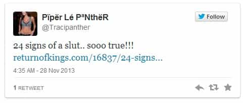
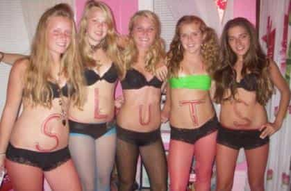
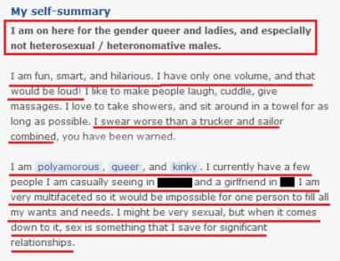

< < < Back
26 More Signs She’s A Slut – Return Of Kings
A few months ago, I wrote a post titled 24 Signs She’s A Slut. In it, I itemized a few tells of promiscuity in women that I—and men everywhere—have figured out through hard, empirical work over the years. Perhaps I should’ve expected it, but the piece instantly stirred up spirited responses, particularly from certain demographics. While getting a lot of “daps” and cosigns from level-headed men and women, it also managed to kick over a hornet’s nest of angry, closeted strumpets who didn’t appreciate having light cast on their scandalous behind-the-scenes shenanigans. Everyone knows that sluts, like Dick Cheney, lurk in the shadows.

A common counter-argument to the article was the logical fallacy of presenting an exception to the rule to try to disprove it. The formula was simple:
1. Pick one of the more innocuous signs that applies to you (“I have blue hair”).
2. Claim to have a relatively tame sexual past (“I’ve been in the same relationship for the last 7 years”).
3. Declare the entire article null and void (“Therefore you’re wrong”).
Of course, these people conveniently failed to read the part of the article that says the more tells a woman exhibits, the more likely it is that she’s a slut. Absent is any black-and-white claim that any single one of these signs alone automatically renders a woman a slut. For example, I acknowledge it’s totally possible to meet a nun with a tattoo. That said, a double-digit count made a slut diagnosis near-inevitable.
Among the pieces of constructive criticism I received was that the list is simply not comprehensive. In consideration to my reader, I’d deliberately presented an “abridged list.” So, by popular demand:
Tuthmosis’s List of Slut Tells, Part II
1. She smokes (cigarettes). The classic adage has never been more true: if she smokes, she most certainly pokes. A girl who smokes is a natural risk-taker—especially in an age where we’re fully cognizant of dangers of the habit. If she gambles with her pulmonary health, rest assured she also takes risks in her sex life.
2.Has mostly “guy friends.” A woman’s comfort around hordes of dudes—and participation in their “guy activities”—likely extends into the bedroom. If for no other reason than simple attrition, sooner or later the conditions (inebriation, horniness, isolation) have been right with several of her so-called guy friends.
3. Wears color contacts. The bigger the cosmetic lie, the bigger the slut. Eye color is a pretty big untruth.
4. Has slutty role models like Miley Cyrus, Taylor Swift, or any of the Kardashians. Women are natural copycats, and it’s a good bet that they’re not only copying their idols’ fashion choices and speech patterns.
5. Wears hoop earrings. Sayings exist for a reason, and “the bigger the hoop, the bigger the hoe” has stuck around precisely because of its reliability. Perhaps no other fashion accessory speaks louder. If you could fit a soda can in it, you’re golden.
6. Grew up with multiple brothers, especially if they’re older. The little sister gets dragged along to gatherings of older boys, who monitor her development like an impatient baker watching a cake through the oven window. She overhears guy-talk through her formative years, and inherits a quasi-male cavalier attitude toward sex.
7. Went to Catholic- or all-girls school (during or after puberty). These places are natural incubators for horniness and sexual resentment, which few girls have the natural willpower to resist satiating upon departure.

8. Has a loud voice and/or a loud laugh. The loudest girl in the bar is never the most prudish.
9. Is an athlete, especially at the elite level. Athletic girls have a triumvirate of powerful pull-factors into slut territory: fit bodies that make them supremely desirable; higher testosterone levels, and therefore higher sex drives; and access to successful and equally horny alpha males. Recent exposés on the epic fuckfests in the Olympic Village have only further confirmed this.
10. Drinks manly drinks. If a girl orders a whiskey on your first date, close your tab and figure out which one of you lives closer to the bar.
11. Is an inveterate online attention-whore (i.e., has thousands of Facebook “friends,” regularly uploads tons of sexy “selfies,” includes herself in pictures of everything she “shares”). Attention-whoring is only one step removed from actual whoring. She thrives on male attention and it doesn’t stop just because she’s not in front of her MacBook or iPhone.
12. Majored in psychology. It’s well known that a not-insignificant percentage of female psychology majors are damaged girls looking for “answers.” That damage, at the very least, grazes the sexual realm.
13. Doesn’t object to, or outright proposes, unprotected sex early on. Do you really think you’re the first, or last, to raw-dog her on the first date?
14. Is good at giving blow jobs. Oral sex is like playing violin or writing calligraphy—fine work that requires practice. There are no prodigies.
15. Claims to be “good at dancing” but doesn’t do any formal dances (e.g., tango). You only get good at grinding your ass against a man’s boner in a dark room by doing it week in and week out. A certain percentage of those boners end up getting past the goalie.
16. Is a single mother. This almost goes without saying, but single mothers rarely made one “mistake,” as they often claim. She only made one mistake that’s visible and audible to everyone.
17. Describes herself as polyamorous, “into kink,” sex-positive, or simply as being “sexual.” Girls are masters at devising euphemisms, especially for their misbehaviors. Take note if her euphemisms translate into little more than horny, trampy, and sexually deviant.

18. Moved to New York City at some point in her life but isn’t actually from there. Moving to New York during your 20s for no good reason, and without a boyfriend or husband, is a near-guarantee that you partook in the female sex buffet that is the Big Apple.
19. Has fake tits or, worse, a fake ass. These even bigger cosmetic lies than color contacts, and more permanent.
20. Is a “fag-hag” (a.k.a. “fruit fly”). Girls who hang around gay men, accompanying them to their rowdy clubs, get manhandled by dudes as a matter of routine. She simultaneously feeds her attention-whoring addiction and her PG-13 sexual cravings. Straight or semi-straight guys will regularly capitalize on her horny moments and hit it. Of course, those won’t “count.”
21. Is into “cosplay.” Dressing up like sexy versions of cartoon and video-game characters is little more than a thinly veiled form of sexual-attention seeking from men.
22. Is on birth control, but not in a relationship. These are girls who are expecting to have unprotected sex any minute. If she has an IUD, she’s made a long-term commitment to casual sex.
23. Is always late to things. Habitual tardiness is tell-tale sign of general irresponsibility. This correlates with sexual carelessness.
24. Has an oversized man-jaw or a big mouth. Like hairiness and a low vocal-register, a man-jaw is a sign of high testosterone and, by extension, oversized sexual cravings.
25. Is somewhat overweight. Girls who dance around the 6 range—especially if it’s because of their dumpy, unfit physiques—are sufficiently attractive to participate in the sexual marketplace, but not cute enough to compete with the real hotties. They’ll make up the difference by being easy.
26. Her mother is a slut. Like mother, like daughter. The person in the best position to steer her daughter away from a life of skankiness is her mother. And, the best way to teach her daughter how not to be the slut is by modeling that behavior herself. But just like violent fathers raise violent sons, slutty mothers raise slutty daughters.
The great American jurist Louis Brandeis once remarked that “sunlight is the best disinfectant.” Bringing these iron-clad slut tells to light isn’t necessarily a condemnation of promiscuous women. It just allows men to make the informed choice of either avoiding commitment to a girl who’s willfully made herself the cake in the urinal or, alternatively, seeking that girl out.
Read More: 24 Signs She’s A Slut


{kind=link}
{kind=link}
{kind=link}
{kind=link}
{kind=link}
{kind=link}
{kind=link}
{kind=link}
{kind=link}
{kind=link}
{kind=link}